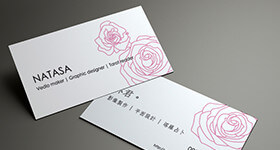

Natasa Lin, a web & graphic desinger, take the editing works as well, who comes from Taiwan. Got a bachelor of fine art degree at Fu-Jen Catholic University in 2005.
The skills as a web designer: HTML(pug), CSS(stylus), jQerry, Sketch, Git, gulp and use boostrap as the RWD framework. The skills as a vedio editor: Premiere, Affter Effect.
Life Aesthetic Exhibition & Design Competition- Second Place, 2012.Creative Bags Design Award- Finalist, 2013.TAIPEI CYCLE d&i awards, 2014.
2004
Bachelor of Fine ArtFu Jen Catholic University, the Department of Applied Art. Animation : After & Before
MIMEO FILMS LTD.Executive Producer
EDITOR IMAGE WORKSHOPEditing Staff

FreelanceDocumentaries, story board, catalog, exhibition print-out, film festival editing, name cards, etc.
2007
2008
FARLING INDUSTRIAL CO., LTD.Art Designer
2009
2010
2012
2013
2014

2017
My name is Natasa Lin, have an Animation degree in Applied Art Department at Fujen Univeristy for 4 years and currently working as a Freelance web designer. Have an extensive experienced as a film maker in various companies. In addition to design, I am good at telling stories with images, and I believe that's what you need, not only a simple designer.
In the previous years as being in charge of designing graphic advertisements and developing three brands for my company with another co-worker, from products design, products development, CIS, to web pages, I was able to learned teamwork and communication skills from my former jobs. The working experience itself helps me to grow and develop a good skills in becoming a real professional graphic designer, which I take highly gratitude in such opportunities from various responsibilities of my past career.
Once my boss said," Natasa, you are a creative and tough girl." Indeed, I am eager to design different things. As I see unlimited potential from your offer, I believe you'll see unlimited potential in me, too. I’m looking forward to your connection.